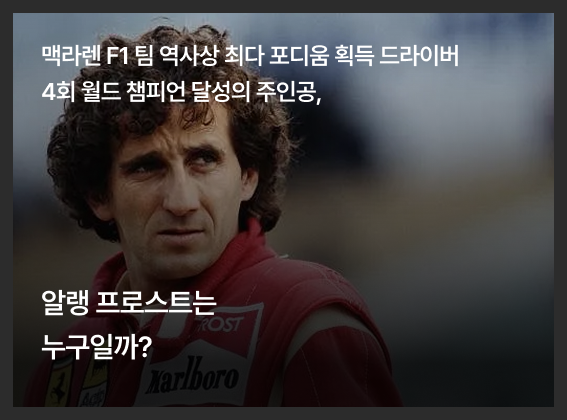

1988 world drivers'
champion winner
드림팀 결성 (1988년)
첫 챔피언 (1988년)

숙명의 대결 (1989년)
하지만 라이벌 관계는 극에 달했고, 챔피언십을 두고
일본 스즈카 서킷에서 열린 결정적인 레이스에서
두 선수는 충돌 사고를 일으키며 역사적인 장면을 남겼다.
일본 스즈카 서킷에서 열린 결정적인 레이스에서
두 선수는 충돌 사고를 일으키며 역사적인 장면을 남겼다.